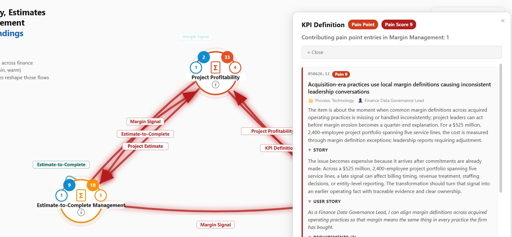
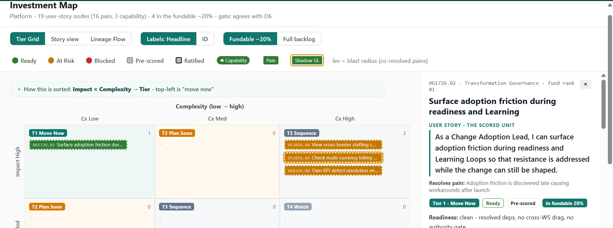

Are you experiencing the same structural gaps other transformation leaders run into?
Three gaps show up in almost every transformation, regardless of how good the team is.
If you recognize all three, keep reading. If you don't, that's useful information too - this probably isn't for you yet.
And what is closing them worth?
Time-to-Relief
Reduction in pain duration from accelerated decisions and earlier relief.
$142,917 for this scenario
Knowledge-Transfer
Reduction in hours required for executive comprehension and alignment.
$256,000 for this scenario
Wrong-Sequence Insurance
Reduction in rework, delays and waste from out-of-sequence investments.
$150,000 for this scenario
Together: $548,917 total risk-adjusted value, on a $54,892 recommended investment - 9.0x net ROI, in this scenario.
Illustrative example - the numbers are calculated live for your organization.
Why do these gaps persist even with smart people and good consultants?
The problem is not effort. It is distance.
The people closest to the pain are rarely the people deciding what to fund next. In between, the evidence has to travel - and it loses something at every step.
Each step up compresses what the last one knew. By the time it reaches the room, the person deciding is working from the thinnest version of what actually happened.
What would it take to keep the reasoning instead of losing it?
Not better presentations. A durable structure - one that holds the evidence, the reasoning, the context, and the trail back to where it came from, so none of it thins out on the way up.
You already paid to create much of this evidence. The problem is that it is trapped in static documents.
We call the alternative your Investment Conscience - persistent access to the knowledge and evidence that should inform a capital decision, at the moment you're making it, not filed away in a deck nobody opens again.
Where did this finding come from - and can I trace it back to reality?
Every important conclusion should be traceable back to the operational evidence that justified it. Not "consultants recommended it." Specifically: this pain, in this function, described by this person, in these words.
What did we actually learn, and where did each conclusion come from?

Click the conclusion, and the evidence underneath it is right there - who said it, in what session, connected to which function and which data flow. A leader who wasn't in the room can follow the exact chain from a stakeholder's own words to the finding built on them. Nothing here has to be taken on faith. This is what a MissionControl Findings Map makes visible.
The cost of leaving this one in place
A slow project-finance refresh hides margin drift. It gets explained at quarter end instead of caught the day it appears - and by then the window to act on it has already closed.
- Which pain points connect across functions?
- What data moves between them?
- Does this exact conclusion trace back to the transcript, word for word?
Every conclusion here is inspectable, not just visible. Click it, and the reasoning behind it is right there to audit.
"By the time I see the margin number it is already history. I need it while I can still do something about it."
Given what we now know, where should we invest first?

The pain that is foundational and high-leverage goes first - not the pain that was proposed first, or argued for loudest. Prioritization stops being a gut call and becomes visible, explainable, and challengeable.
Why fund this first?
Because it is foundational and high-leverage: relieving this pain also reduces several downstream pain points.
- Which pain is foundational?
- What belongs in the first fundable wave?
- What should wait?
The map makes the "why this first" argument visible enough to defend in a room full of people who weren't there for the discovery work.
And the reasoning does not stop there.
Click through and the same discipline holds: why this initiative outranks that one, and what happens the moment an assumption changes.
What solving this pain is worth, reduced to one number - value that leads cost from the first month, on a base case the tool itself calls conservative.
Where the capability behind a recommendation lives - in your Playbook, next to the pain point it responds to.
What should a board be able to see?
A board should be able to answer:
Evidence before funding. Accountability after funding.
The reasoning used to authorize an investment should not disappear after funding.
This is for you if
- You have started a business transformation.
- You have real capital decisions ahead.
- You have already done some operational discovery, current-state documentation, process analysis, workshop work, or equivalent evidence gathering.
- You want future business-transformation investments to be approached with greater fiduciary discipline.
- You want the ability to compare realized value with the value used to justify or forecast the investment.
This is probably not for you yet if
- You have not started a business transformation.
- You do not have meaningful capital-allocation decisions ahead.
- You have no operational discovery evidence yet - no transcripts, pain points, current-state findings, process documentation, or equivalent source material.
You came in recognizing three gaps. You have now seen why they persist, what a durable structure looks like, and how far the evidence can be traced, kept intact from the first observation to the investment decision, and after it is funded. MissionControl™ is the missing operating system between what your people know and where you invest.
See your own Investment Conscience at work.
Apply this reasoning to your own organization.
We will use a subset of your own operational discovery so that what you see reflects your reality.
What you should know before you click
- There is no charge.
- You do not need to send everything - a subset of what you already have is enough.
- We will prepare a representative Findings Map from it.
- The session is based on your information.
- It is built to answer a small number of specific executive questions.
- It starts with a conversation. We are not expecting you to email sensitive transformation material with no context.
What you get for the 30 minutes
- What does your existing discovery evidence reveal when it is structured and connected?
- Which pain appears most foundational or high-leverage, and why?
- Given what we found, what would you fund first - and why?